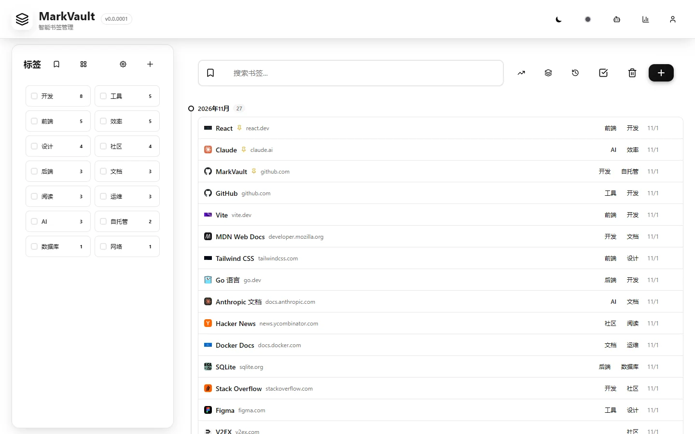
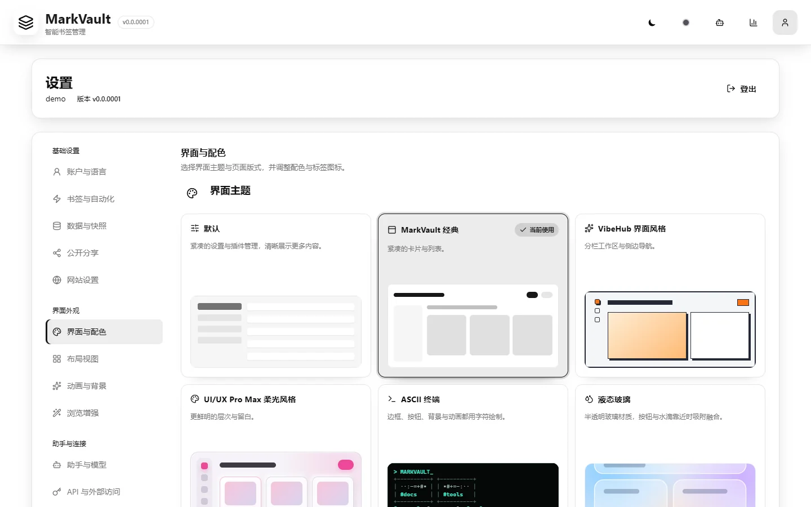
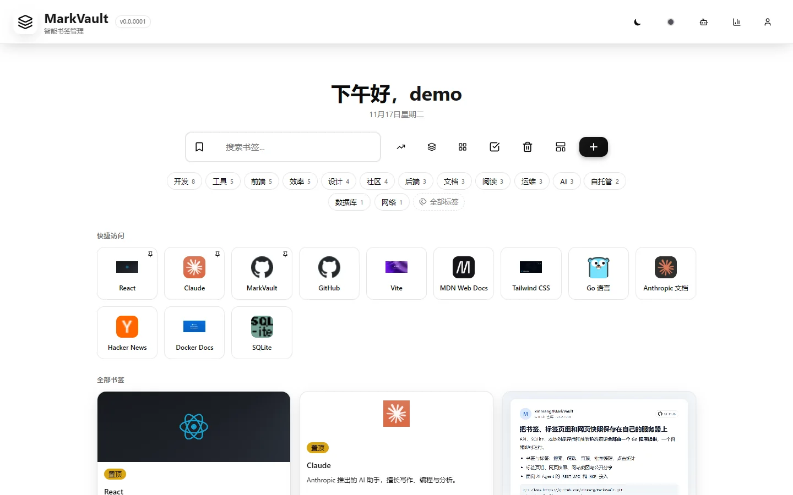
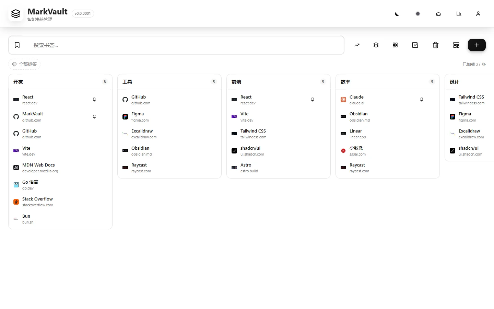
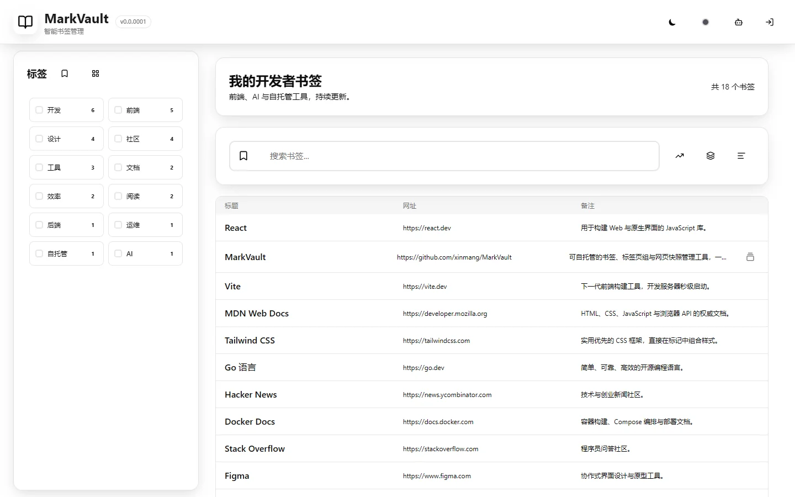
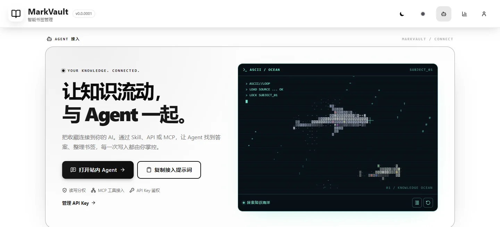
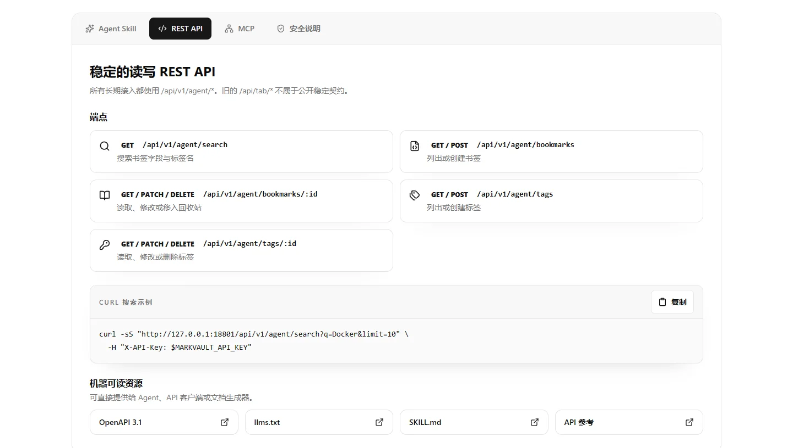
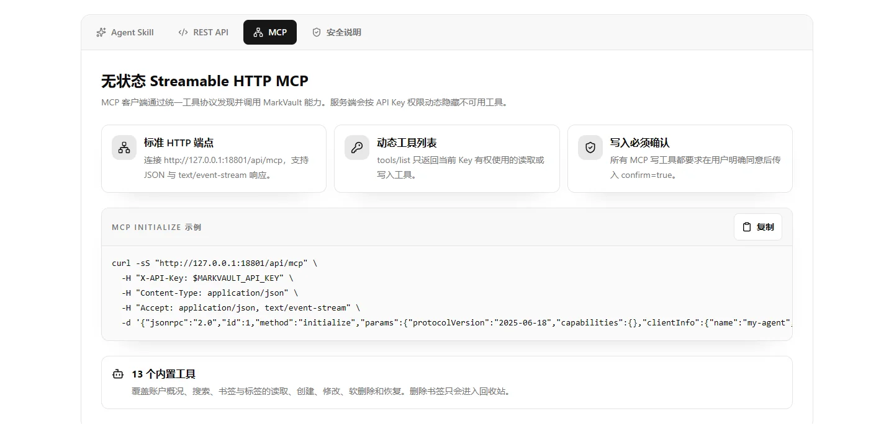
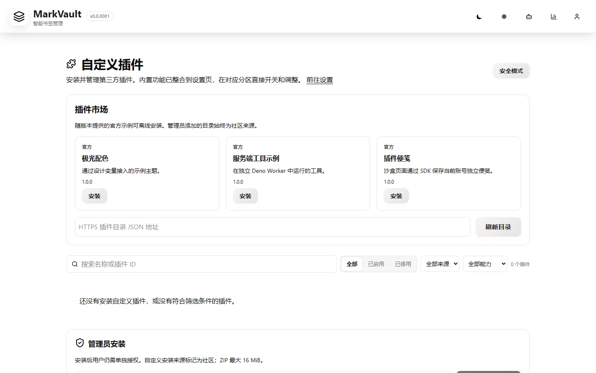

把书签、标签页组和网页快照保存在自己的服务器上
MarkVault 是可自托管的书签管理工具。REST API、SQLite 数据库、本地对象存储和网页界面都由一个 Go 程序提供，一个容器即可运行，不需要外部数据库或对象存储服务。
一个容器就能运行
Go 单程序内置 API、SQLite、对象存储和前端，不依赖 Cloudflare、外部数据库或对象存储服务。
数据在自己手里
全部数据集中在一个目录，停止服务后复制目录就是完整备份；另有 JSON 导入导出。
浏览器扩展
Chromium 扩展连接自己的实例，收藏网页、保存标签页组和带版本的网页快照。
给 AI Agent 的接口
细粒度权限的 API Key、稳定的 REST API 和 MCP 接口，写操作需要确认。
书签与标签
收藏、整理、再找回来
搜索、筛选、置顶、批量整理、点击统计和回收站，都在一个页面里完成。
- 搜索与筛选：按关键词搜索标题、描述和网址，叠加多个标签缩小范围。
- 置顶与批量整理：置顶、归档、改标签和删除都可以多选后一次完成。
- 回收站：删除的书签先进回收站，可以恢复。
- 网页快照：配合扩展为书签保存带版本的网页快照，原网页失效后仍能查看。

明亮与暗色模式可以随时切换，也可以跟随系统。界面提供中文和英文两种语言。

视图
同一批书签，换一种看法
除了卡片、列表、极简和标题视图，画廊、时间线、站点分组和专注视图以内置插件的形式提供，在「设置 → 布局视图」里开启。




界面主题
五套界面主题，外加一片 ASCII 海洋
主题、配色和页面版式在「设置 → 界面与配色」里切换，背景动画在「动画与背景」里设置。



页面版式
连整页的排法也能换
视图只替换书签列表这一块，页面版式则接管整页排版：标签、工具栏、列表和侧栏放在哪里。首页有顶栏、起始页、三栏、标签看板和无限画布五种版式。




标签页组
把一窗口的标签页收起来，之后再打开
保存与整理多个网页，支持分组、待办和恢复。
- 分组与文件夹：标签页组可以放进文件夹，分层整理。
- 待办：把还没处理的标签页标成待办，集中查看。
- 回收站：删除的分组可以恢复。
- 分享：单个分组可以生成分享链接，并设置有效期。


数据统计
看看自己到底在用哪些收藏
- 书签与标签的点击趋势、排行和访问时段分布。
- 按日、周、月查看，可以自选时间范围，也可以只看某个标签。
- 另有一页「Agent 与 MCP」：外部调用的次数、成功率与耗时。只记录调用元数据，不保存请求参数和返回内容。

公开分享
挑一部分书签，做成公开页面
把书签标记为公开，它们就会出现在你的分享页上。链接后缀、页面标题和描述都可以自己定；关闭分享后，分享页不再可访问。


- 细粒度 API Key：按用途选只读、基础或完整模板，也可以逐项授权；可撤销、可设置过期时间。
- REST API：
/api/v1/agent/*提供书签、标签和搜索接口，附带 OpenAPI 3.1 契约。 - MCP：
POST /api/mcp提供 13 个内置工具，工具列表按 Key 的权限过滤，写工具必须带confirm: true。 - 站内 Agent：配置模型后可以用自然语言查询和整理书签，写操作先出确认卡片，确认前不改数据。

/agent 页面。


插件
内置功能按需开关，还能装第三方插件
界面主题、配色、页面版式、各种视图、海洋背景、图床、通行密钥和外部 MCP 连接等内置功能，都在设置页对应的分区里开关和配置。
第三方插件在「设置 → 自定义插件」管理：管理员可以通过离线目录、ZIP 或固定的 GitHub Release
资产安装，安装后每个用户再单独授权。插件出问题时，打开 /plugins?safe=1 会跳过可选插件，方便停用。

数据与备份
一个目录装下全部数据
- SQLite 数据库、对象文件（快照、图片、截图）和实例密钥都在同一个数据目录里。
- 完整备份：停止服务，复制整个目录。
- JSON 导入导出：导出书签、标签和标签页组，兼容旧版 TMarks 的 JSON。它只含业务数据，不含快照文件、图片和实例密钥，不能用来恢复整个实例。
- 快照保留数量在设置里调整；文件存储的总容量上限由部署配置
STORAGE_MAX_TOTAL_BYTES决定，默认约 7 GiB。

浏览器扩展
在浏览器里一键收进自己的实例
Chromium 扩展连接你自己的实例：收藏网页、一键保存标签页组、保存带版本的网页快照，并把 X、linux.do 等站点的帖子生成图文卡片。适用于 Chrome、Edge、Brave 等 Chromium 内核浏览器。
- 在实例的「浏览器」页面或扩展仓库的最新 Release 下载
markvault-extension-chrome.zip。 - 解压后打开
chrome://extensions/，开启开发者模式，选择「加载已解压的扩展程序」。 - 在 MarkVault 的设置里创建权限合适的 API Key，在扩展中填写实例地址和 Key。
- 扩展请求带跨域来源时，把
chrome-extension://<扩展 ID>加入CORS_ALLOWED_ORIGINS后重启服务。

手机
手机浏览器里也能用
界面是响应式的。窄屏下底部导航在书签、标签页和 Agent 之间切换。


快速开始
用 Docker Compose 部署
需要 Docker Engine 24+ 与 Docker Compose v2。部署方案面向单机、单容器，不支持多个副本共享同一个数据目录。
git clone https://github.com/xinmang/MarkVault.git
cd MarkVault
cp .env.example .env # PowerShell 用 Copy-Item .env.example .env
mkdir -p data/go && sudo chown 1000:1000 data/go # 仅 Linux，必须在首次启动前完成
docker compose pull app
docker compose up -d --no-build --wait
打开 http://localhost:8787 注册账号。curl http://localhost:8787/api/v1/health
可以检查服务是否正常。
- 首个注册的账号成为管理员，随后自动关闭注册；管理员可以在设置里重新开放。
- 容器以 UID/GID
1000:1000运行。Linux 上新建的数据目录要像上面那样先交给该用户，否则容器无法写入/data。 - 端口默认只绑定
127.0.0.1（APP_BIND）。公网访问请在前面放一个提供 HTTPS 的反向代理。 - 默认镜像是
ghcr.io/xinmang/markvault:latest。生产环境请在.env里用MARKVAULT_IMAGE固定版本标签或镜像摘要。
配置项、HTTPS、源码构建、更新和故障排查见 部署指南。
致谢与许可证
来源与使用条件
- MarkVault 基于 TMarks（作者 TMarks Team）改造：后端改为 Go 单程序、本地 SQLite 与对象存储，并扩展了数据迁移、Agent / MCP 接入和界面偏好。MarkVault 是独立修改版本，不代表上游项目。
- ASCII 海洋背景的鱼群模拟和字符渲染改编自 ascii-sharks（MIT）。
- 源代码以 CC BY-NC 4.0 提供，不允许商业用途。使用、修改和分发时请遵守 LICENSE，其中保留了 TMarks Team 的署名。